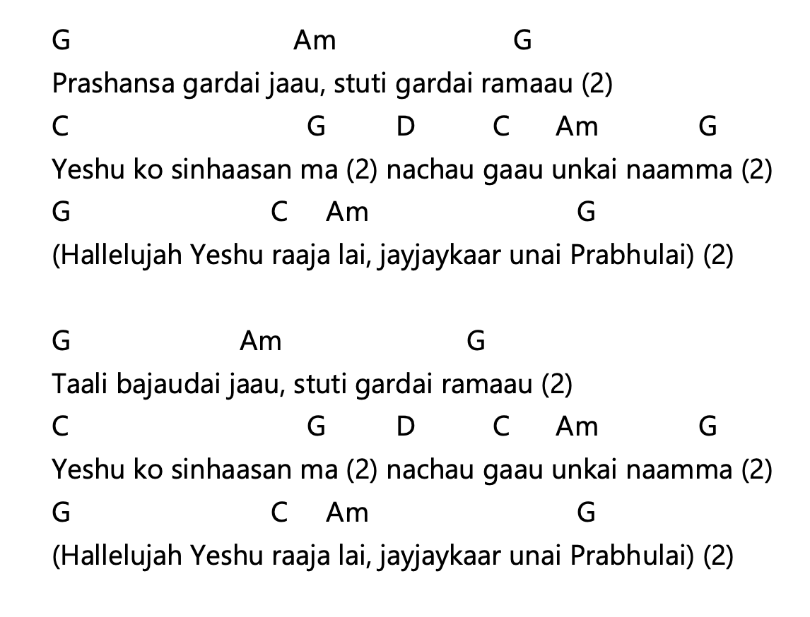
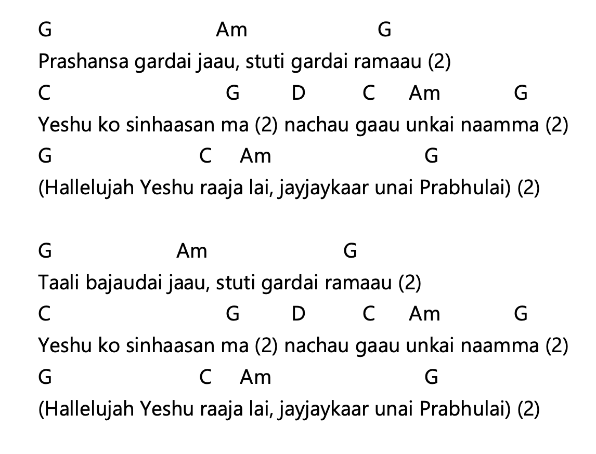
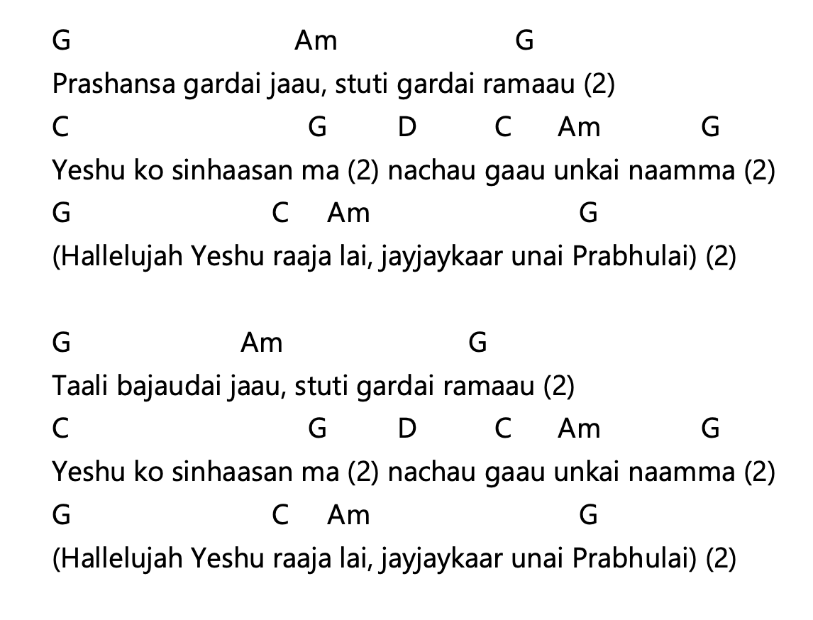
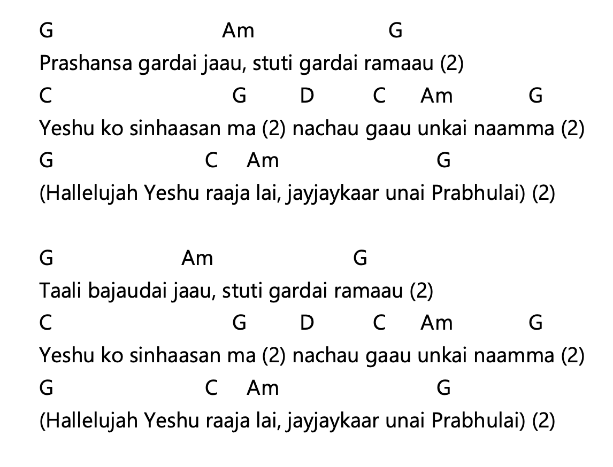
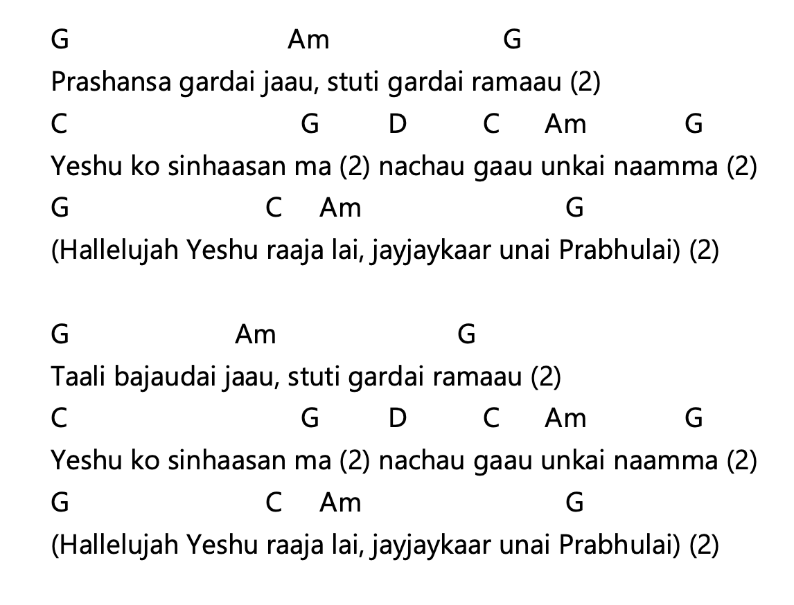
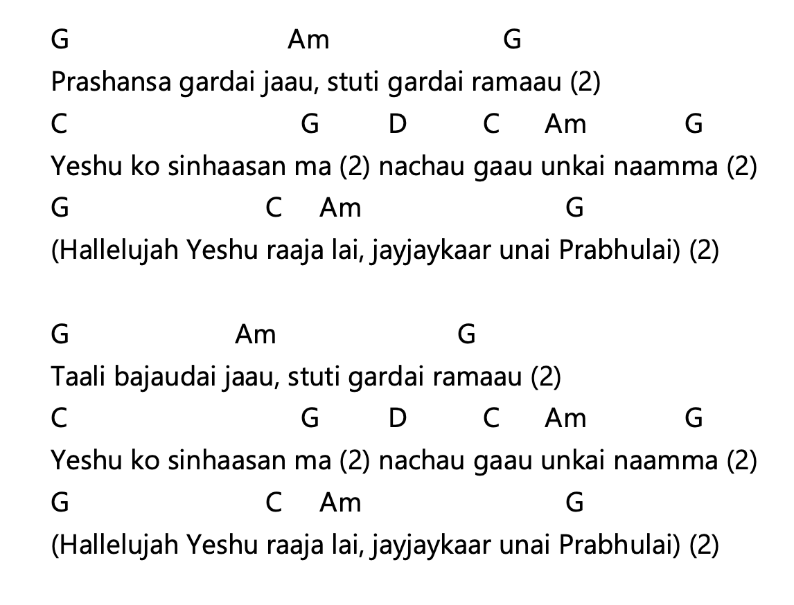

प्रशंसा गर्दै जाऊँ स्तुति गर्दै रमाऊँ (२) येशूको सिहांशनमा (२) नाचौँ गाऊ उनकै नाउँमा (२) (हल्लेलूयाह येशू राजालाई जयजयकार उनै प्रभुलाई) (२) ताली बजाउदैँ जाऊँ स्तुति गर्दै रमाऊँ (२) येशूको सिहांशनमा (२) नाचौँ गाऊ उनकै नाउँमा (२) (हल्लेलूयाह येशू राजालाई जयजयकार उनै प्रभुलाई) (२)